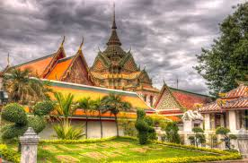

Tailandia (en tailandés: ประเทศไทย), oficialmente Reino de Tailandia (en tailandés: ราชอาณาจักรไทย, Ratcha-anachak Thai), es uno de los cuarenta y nueve países que componen el continente asiático. Su capital y ciudad más poblada es Bangkok, centro de la actividad política, comercial, e industrial.  |
Gastronomía
|
El ingrediente principal en la cocina tailandesa es el arroz, que puede ser ingrediente a modo de sopa, frito o simplemente cocido blanco. Otros ingredientes que se usan comúnmente son los pimientos picantes, ajos, fideos y leche de coco. En carnes se emplean el pollo, y el cerdo. Entre los condimentos se encuentra el curry verde y el curry rojo tailandés formulado con cilantro y pimientos verdes , semillas de cilantro, salsa de soja y Nampla. La cocina tailandesa mezcla cinco sabores fundamentales: dulce, picante, agrio, amargo y salado. Algunos ingredientes comunes utilizados en la cocina tailandesa incluyen el ajo, pimientos, hierba de limón y salsa de pescado. |
¿Donde ir?
Hay cinco regiones de Tailandia: Norte, Nordeste, Este, Central y del Sur, cada una geográficamente distinta de las demás. Cada provincia de Tailandia contiene sus propios atractivos culturales, históricos y naturales únicos, desde las montañas del norte (repletas de vida silvestre y el hogar de tribus exóticas) a los llanos centrales (denominados el “Plato de Arroz de Asia”) a la meseta del noreste (se extiende hasta el río Mekong en la frontera con Laos) y las espectaculares playas e islas del sur (como Phuket, Krabi o Koh Samui, entre otras muchas). Tailandia es un destino para visitar en cualquier época del año. |
|
|